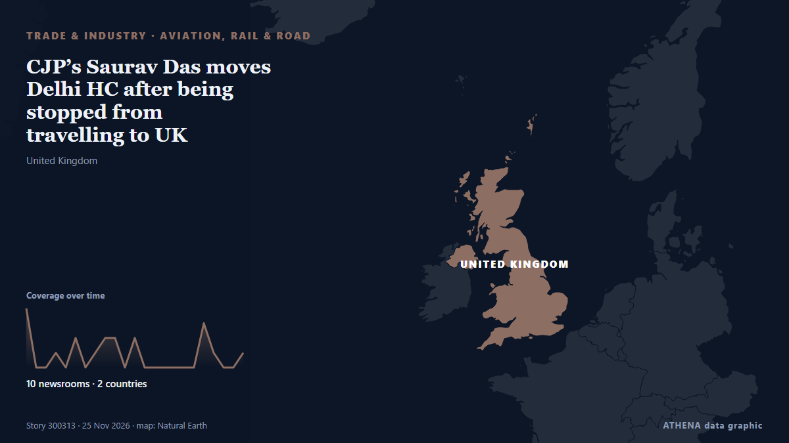

Aérien, rail et route
SponsoriséPrésenté par  Cybernetics and Artificial Intelligence Lab Welcome to the Cybernetics and Artificial Intelligence Laboratory, established at the Department of Business Administration of the National and Kapodistrian University of Athens. The lab is headed by Professor Dimitrios Thomakos. The lab aims to do research that can be published in top venues. Our research uses tools and methods of Artificial Intelligence, and lies in the following areas: - Forecasting - Decision making - Cyber security - Finance We are always looking forward to collaborating with exceptional students!
Cybernetics and Artificial Intelligence Lab Welcome to the Cybernetics and Artificial Intelligence Laboratory, established at the Department of Business Administration of the National and Kapodistrian University of Athens. The lab is headed by Professor Dimitrios Thomakos. The lab aims to do research that can be published in top venues. Our research uses tools and methods of Artificial Intelligence, and lies in the following areas: - Forecasting - Decision making - Cyber security - Finance We are always looking forward to collaborating with exceptional students!
| 13 nov. | 0 |
|---|---|
| 14 nov. | 0 |
| 15 nov. | 0 |
| 16 nov. | 0 |
| 17 nov. | 0 |
| 18 nov. | 0 |
| 19 nov. | 1 |
| 20 nov. | 1 |
| 21 nov. | 1 |
| 22 nov. | 6 |
| 23 nov. | 10 |
| 24 nov. | 3 |
| 25 nov. | 1 |
| 26 nov. | 0 |
Les titres sont affichés en anglais, tels que publiés.

CJP’s Saurav Das moves Delhi HC after being stopped from travelling to UK
The Ministry of External Affairs said the passport office had asked Das to respond to a notice over alleged discrepancies and not use the document until then. de Scroll.in
Flights cancelled in Belgium due to cost-of-living strike
A series of strikes have hit Belgium in recent months as the prime minister struggles to agree a budget to cut costs. de BBC News
Construction of railway under Trump Route project in Armenia to begin in 2027
Preparatory work is currently underway in the area. de TASS (English)
PM Modi Announces Rs 15,000-Crore Development Package For Nepal
The two leaders virtually laid the foundation of several India-assisted projects in Nepal and flagged off a cross-border passenger rail link between Ayodhya in Uttar Pradesh and Janakpur Dham in… de NDTV World
Saddam Hussein's Boeing 747 could be yours for $900,000
An Iraqi government plane used by former dictator Saddam Hussein has been put up for auction with an estimated value of $900,000. de The National
Disruptions to regional trains, buses, trams on 2nd day of public transport strike
Public transport users can again expect disruptions to regional trains, buses, and trams today. de NL Times
Israel approves flydubai’s return to Tel Aviv pending security clearance
The decision was made after a visit to the UAE by the Israeli Transportation Ministry director-general. de The Straits Times
Congress slams renaming of Jewar airport after PM Modi, recalls how Nehru turned down such proposals
After the Narendra Modi Stadium in Ahmedabad and the Narendra Modi International Airport, what will be next, asks Jairam Ramesh. de The Hindu
De Villiers alleges Australia tampered with ball in 2018 Durban Test
Former South Africa batsman says ball-tampering began before Cape Town scandal. de Express Tribune
Father and daughter travelling to family baptism detained by ICE at Seattle airport
Bystanders boarding the Alaska Airlines flight at Seattle-Tacoma International Airport captured footage of the arrest. de The Independent
Delta system outage delays 1,300+ US flights
Shafaq News- Washington An outage in Delta Air Lines’ weight-and-balance system delayed more than 1,300 flights across the United States on Sunday, the airline said. de Shafaq News (English)
Airports, public transport shut down amid national strike in Belgium
Belgium's prime minister on Monday set a new year-end deadline for his coalition government to agree a cost-cutting budget or face collapse. de France 24 English
HT Evening News Brief November 22: Nepal PM's visit; COP31 deadlock, India-New Zealand test and more
Here's a quick recap of the day's top headlines from India, the world and the field of sports and entertainment. de Hindustan Times
Vietnam Embassy celebrates Vietnamese Culture Day in Phnom Penh
The Embassy of Vietnam in Cambodia has hosted a cultural showcase in Phnom Penh to mark Vietnam Culture Day, spotlighting the country’s traditional culinary heritage and its world-renowned noodle… de Khmer Times
ICE arrests 2 at Seattle airport in 'chilling' scenes — governor
Washington's governor has denounced the arrests made by ICE officers at Seattle's airport, calling the incident "horrific." de DW English
US Questions Streamer Sneako After Afghanistan Trip, Seizes Devices
US authorities questioned American streamer Sneako for eight hours and seized his electronic devices after he returned from Afghanistan, where he livestreamed meetings with Taliban officials… de Khaama Press
Vietnam-France-South Korea consortium wins $400M high-speed rail consultancy contract
A consortium of eight Vietnamese, French and South Korean companies has been selected for a VND10.24-trillion (US$397-million) consultancy package for Vietnam’s North-South high-speed railway, the… de VnExpress International
KAA proposes new airport access fees for taxis
Under the proposals, taxis will be charged for every trip to the airport while chartered... de Business Daily Africa
Flights in Belgium cancelled on Monday due to strike
Air traffic to and from Belgium is set to come to a virtual standstill on Monday due to a nationwide strike. de Oman Observer